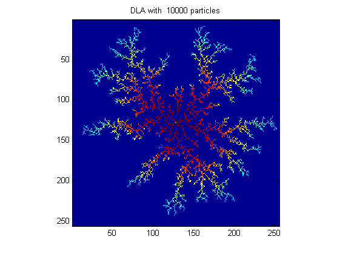
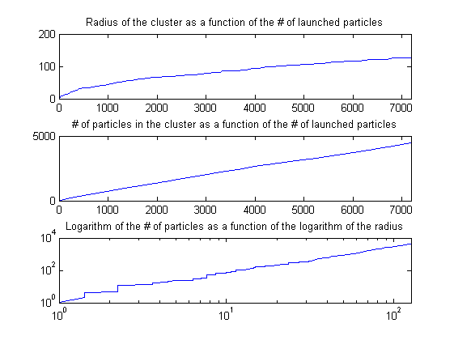

| FRACLAB Functions |
|
Simulates a Diffusion Limited Agregation
A = dla(N)
A = dla(...,'Visualization')
A = dla(...,'Propertyname',Propertyvalue)
[A,PNP,RNP] = dla(...)
A = dla(N) Simulates the diffusion limited agregate, A, using a matrix size N. The parameter N is a positive integer that defines the size of the matrix containing the cluster where the simulation is performed.
|
The simulation
Another particle is then launched and the process goes on. To speed up the simulation, the launching radius, RL and the killing radius, RK are not fixed, but grow as a function of the radius of the cluster, RC :
The colours in the cluster represents the arrival time of each particle. |
A = dla(...,'Visualization') Simulates the diffusion limited agregate, A, using a specific type of visualization. The supported Visualizations can be choosen from the list below :
| Specifier | Visualization Type |
|---|---|
| 'visup' | Slow : Show each agregated particle (default) |
| 'visud' | Extremely Slow : Show diffusion |
| 'novisu' | Fast : Don't show animation |
A = dla(...,'Propertyname',Propertyvalue) Generates the diffusion limited agregate, A, applying the specified property settings. The property setting can be choosen from the list below :
| Property | Purpose |
|---|---|
| 'radius' |
The simulation A is computed using specific circle radius, [RL, RK]. The parameters RL and RK
are positive reals that respectly define |
| 'parts' |
The simulation A is computed with a specific number of particles, NP. The parameter NP is a positive integer
that defines |
| 'moves' |
The simulation A is computed with a specific number of movements, NM. The parameter NM is a positive integer
that defines |
| 'stick' |
The simulation A is computed with a specific sticking probability, SP. The parameter SP is a positive real in (0,1). |
[A,RNP,PNP] = dla(...) Simulates the diffusion limited agregate, A, and computes the radius of the cluster, RNP, and the number of particles, PNP, as a function of the number of launched particles, NP.
N = 256;
rl = 1; rk = 20; %defining the launching and killing radius
np = 10000; nm = 2000; %defining the maximum number of particles and movements
[A, rnp, pnp] = dla(N,'radius',[rl,rk],'parts',np,'moves',nm,'stick',1);


| |
cropormask | ebpsimulate | |